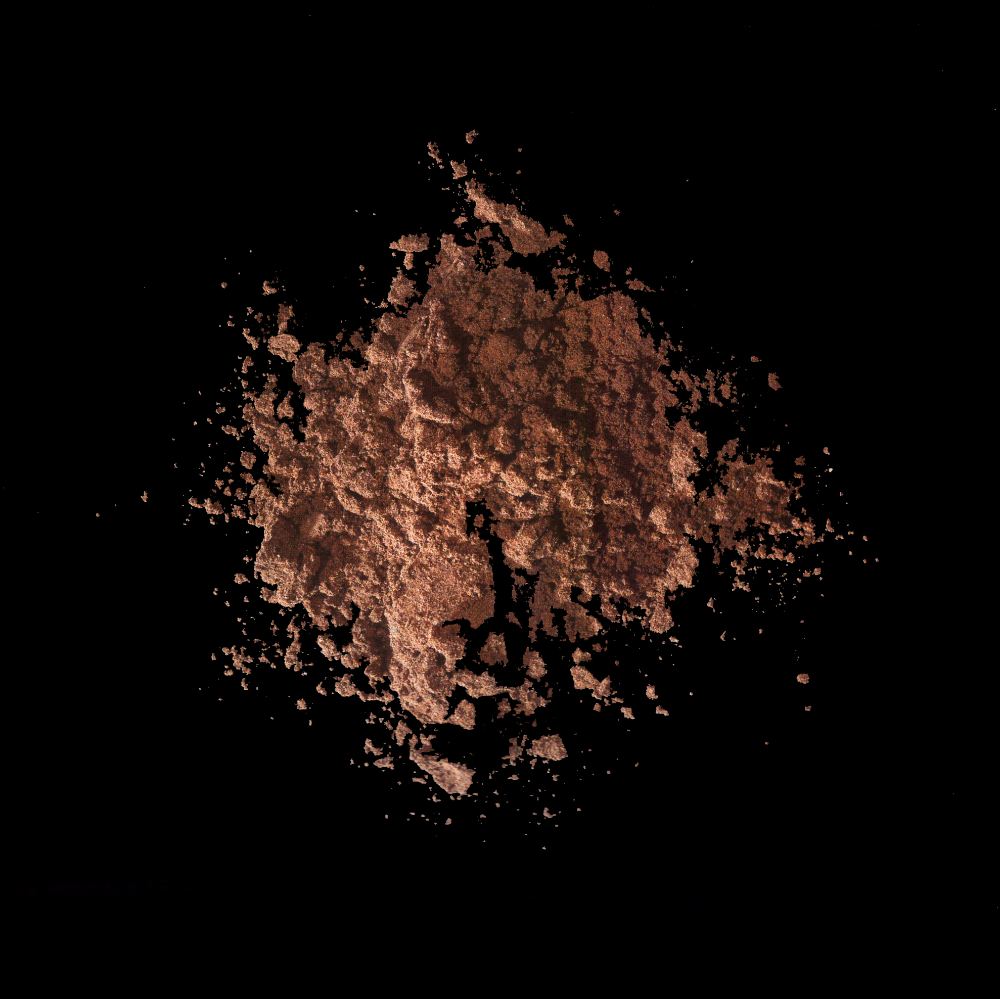

Anthocyanins

11029-12-2
Synonyms or siblings
Anthocyanins, Grape skin extract, Grape color extract, Enocianina
Funtion
Appeal - Color, Preservative - Antioxidant
Description
Anthocyanins are natural pigments in plants, especially in red grapes and eggplants. They color foods like grape soda and candies, changing hue with pH levels. Though researched for potential health benefits, they degrade easily and are quickly excreted, so their effects remain unclear.
다양한 이름
화청소, 포도껍질 추출물
기능
색소, 항산화제
설명
안토시아닌은 꽃이나 과실 등에 주로 포함되어 있는 색소를 말한다. 수소 이온 농도에 따라 빨간색, 보라색, 파란색 등을 띤다. 안토시아닌은 항산화제로서의 가치가 있으며, 항산화 물질 가운데서도 가장 탁월한 효과를 내는 것으로 주목받고 있다. 가지, 블랙커런트, 포도, 아사이베리 등에서 찾아볼 수 있다.